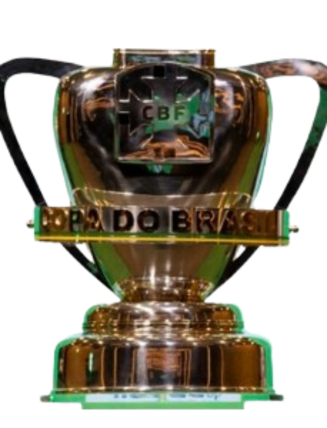

Jogos
83

Goleador nato desde o primeiro dia. A temporada no The Strongest anunciou o talento, mas foi no Corinthians que o mundo viu o que Moreno é capaz — 68 gols em 39 jogos, Copa do Brasil conquistada e quatro prêmios individuais em uma única temporada.
